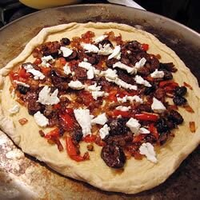

>
meatloaf

Ingredients
- 1 cup lukewarm water
- 1 (.25 ounce) envelope active dry yeast
- 3 cups all-purpose flour
- 1 teaspoon vegetable oil
- 1 teaspoon salt
- 8 dried figs
- 1 medium red onion, thinly sliced
- 1 tablespoon olive oil
- 1 pinch salt
- 1 teaspoon dried thyme
- 1 teaspoon fennel seeds
- 4 ounces goat cheese
- 1 tablespoon olive oil, or as needed
- 3 tablespoons ketchup
Steps
- Pour the water into a large bowl, and sprinkle yeast over the top. Let stand for a few minutes to dissolve. Mix in the oil, salt, and flour to make a dough. When the dough is too stiff to stir, turn out onto a floured surface, and knead for about 5 minutes. Place into an oiled bowl, and cover with a clean towel. Set aside to rise for about 45 minutes.
- Place the figs into a small bowl, and pour boiling water over them. Let stand for about 10 minutes, then drain and chop. Set aside..
- Meanwhile, heat 1 tablespoon of oil in a skillet over medium heat. Add the onions; cook and stir until they are wilted and soft. Reduce heat to low, and season with salt. Continue to cook and stir until the onions are a dark brown, 5 to 10 minutes. Stir in the thyme, fennel seed and figs, and remove from the heat..
- Preheat the oven to 450 degrees F (220 degrees C). Punch down the pizza dough, and stretch into a circle about 1/4 inch thick. Place on a lightly greased pizza pan or baking sheet. Brush the surface lightly with remaining olive oil. Spread the onion and fig mixture over the crust. It will be sparse, but there is plenty of flavor. Dot with pieces of goat cheese.
- Bake for 15 to 18 minutes in the preheated oven, or until the crust has turned golden brown at the edges.